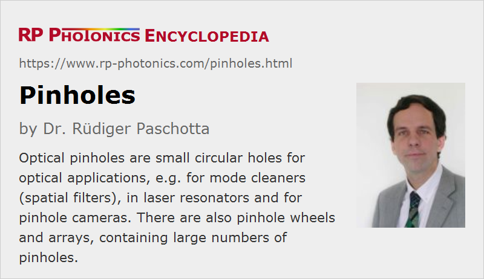

Pinholes
Definition: circular holes, typically with diameters well below one millimeter
German: Lochblenden
How to cite the article; suggest additional literature
Author: Dr. Rüdiger Paschotta
Optical pinholes are small circular holes through which light can be transmitted. The name of the term comes from the simple fabrication method of punching a thin metallic plate or foil with a pin. However, precision pinholes for optical applications are normally made by laser drilling. The hole diameter is typically well below 1 mm, sometimes even down to a few micrometers. Diaphragms typically have larger openings.
Applications of Pinholes
A pinhole can be used as a kind of small optical aperture:
- A pinhole is the simplest possible optical element for imaging; it can be used in a pinhole camera (camera obscura).
- A very small pinhole can be used for obtaining light with increased spatial coherence from incoherent light. Early experiments with interferometers often made use of that technique.
- In a mode cleaner (spatial filter), a pinhole is placed in the Fourier plane of a lens such that it can be used to suppress higher spatial frequency components. After a collimation lens, the beam profile is then more smooth.
- In a laser resonator, a pinhole can cause substantial losses for higher-order resonator modes, while the losses for the fundamental mode may still be relatively small. The beam quality of the laser may therefore be improved.
For some of the applications, the power handling capability is essential. Such high-power apertures are usually made in the form of reflecting pinholes, which absorb only a minor portion of the laser radiation. They can be made of relatively resistant metals like stainless steel, molybdenum and tungsten. Ultra-thin pinholes are also made from platinum iridium. Some pinholes are equipped with a gold coating for improved power handling.
A relatively large thickness of the plate is beneficial in terms of heat conduction. However, the thickness may need to be reduced just around the hole in order to allow for operation with strongly divergent light. Note that even for diffraction-limited beams, the Rayleigh length becomes rather small in situations with tight focusing.
Pinholes for low-power applications often have a black coating so that they mostly absorb the not transmitted part of the radiation.
Devices with Multiple Pinholes
There are various kinds of devices containing multiple pinholes:
- Pinhole wheels contain some number of pinholes of different sizes arranged along a circle, so that one can select one of the holes simply by rotating the wheel.
- Nipkow discs are rotating discs with hundreds or thousands of pinholes of equal size. They are used in confocal scanning microscopes.
- Two-dimensional pinhole arrays can contain a large number of pinholes on a rectangular grid. They may be used as Hartmann plates for analyzing optical systems.
Suppliers
The RP Photonics Buyer's Guide contains 8 suppliers for pinholes. Among them:
Questions and Comments from Users
Here you can submit questions and comments. As far as they get accepted by the author, they will appear above this paragraph together with the author’s answer. The author will decide on acceptance based on certain criteria. Essentially, the issue must be of sufficiently broad interest.
Please do not enter personal data here; we would otherwise delete it soon. (See also our privacy declaration.) If you wish to receive personal feedback or consultancy from the author, please contact him e.g. via e-mail.
By submitting the information, you give your consent to the potential publication of your inputs on our website according to our rules. (If you later retract your consent, we will delete those inputs.) As your inputs are first reviewed by the author, they may be published with some delay.
Bibliography
| [1] | M. Young, “Pinhole optics”, Appl. Opt. 10 (12), 2763 (1971), doi:10.1364/AO.10.002763 |
See also: diaphragms, optical apertures, optical slits
and other articles in the category general optics
|  |
If you like this page, please share the link with your friends and colleagues, e.g. via social media:
These sharing buttons are implemented in a privacy-friendly way!